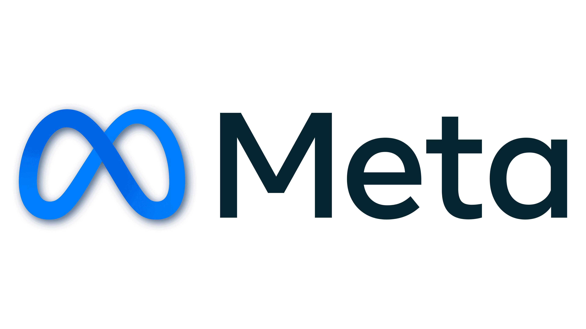
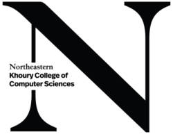
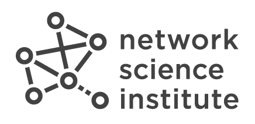
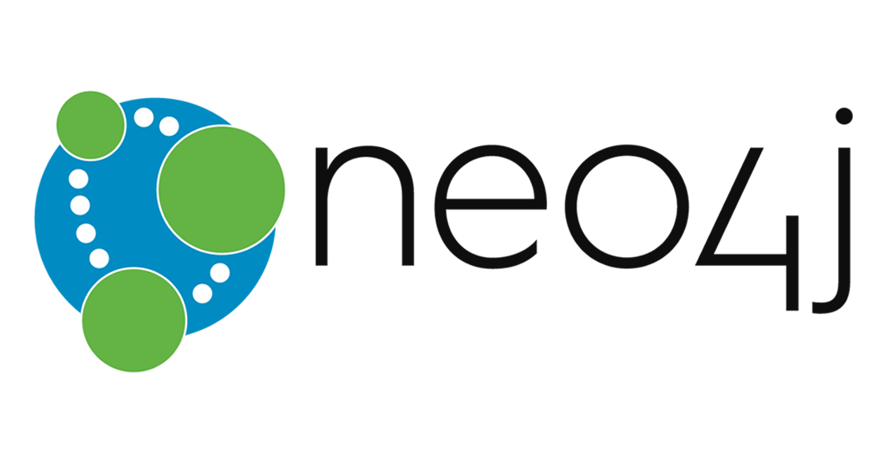

Data Scientist
April 2025 - PresentWhatsApp Business, Meta Platforms Inc.
New York City, NY
- Randomized controlled trials, causal inference, random-effects meta analysis, user research, and more.
Senior Data Scientist
October 2023 - October 2024Product Data, Sonos Inc.
Boston, MA
- I led a cross-functional team with hardware and user interface designers focused on understanding user behavior, control patterns, and feature discoverability across speaker categories to drive decisions for new products and features e.g. headphone design, optimal button placement, Bluetooth availability, power/battery saver mode etc.
- I supported the development of Gaussian Process models in Python to automatically set speaker volumes, reducing volume change interactions for users by over 50%.
- I built a feature generation framework with dbt and Snowflake that creates 7-10 million rows of product usage-based feature values per day for use in downstream machine learning tasks.
- I contributed to the development of a Python-based machine learning pipeline to cluster and segment over 10 million users using k-means with over 80 features.
Data Scientist
January 2022 - September 2023Product Data, Sonos Inc.
Boston, MA
- I developed SQL-based statistical and probabilistic methods to discover and predict usage routines for over 8 million users, and achieved R2 values between 0.6 - 0.85, and productionized them using dbt.
- I built a proof-of-concept collaborative recommendation system using Python for Sonos Radio, a radio/music service with an average weekly user base of 1 million.
- I collaborated with the User Research team in designing and conducting user research studies to understand the effect of new software automations on user behavior, leading to the development of improved volume control and speech enhancement features.

Teaching Assistant - DS3500 Advanced Programming with Data
September 2021 - December 2021Khoury College of Computer Sciences, Northeastern University
Boston, MA
- Instructors: John Rachlin
- Course website
- I taught a class on APIs (code and slides on GitHub)
Analytics Engineering Intern
January 2021 - August 2021DTonomy Inc.
Cambridge, MA
- DTonomy is developing an AI-based SOAR platform to improve the efficiency of SOC teams
- Supervisor: Peter Luo, Co-Founder & CEO
- I analysed cyberattack data in Python based on the MITRE ATT&CK database, and developed patterns to identify and classify Defense Evasion and Lateral Movement attacks for the SOAR platform
- I created bots for Slack using Rasa 2 to use services like Google Analytics and AbuseIPDB
- I developed Node-RED automations to connect Elastic Security with the SOAR platform
Teaching Assistant - DS2000 Programming with Data
October 2020 - December 2020Khoury College of Computer Sciences, Northeastern University
Boston, MA
- Instructors: John Rachlin and Laney Strange (CS practicum)
- Course website
- Practicum website

Research Assistant - Center for Complex Network Research
June 2020 - January 2021Network Science Institute, Northeastern University
Boston, MA
- Supervisor: Louis Shekhtman
- I worked on the Science of Success project, focusing on network analysis related to philanthropies, non-profits, and universities to determine the factors that influence grants and donations
- I was responsible for collecting and processing data with over 1.5 million samples that could supplement data previously obtained from GuideStar
- After an exploratory analysis, I filtered and converted the collected data into a graph to study more than 97,000 relevant relationships between various philanthropies, non-profits, trustees and board members, universities, and other sociopolitical entities
- I worked on matching the names of organisations and people across the collected data and GuideStar using TfidfVectorizer, CountVectorizer, and pairwise kernels, thereby expanding the previous network
- I also worked on some more university-specific analyses to understand what kind of people make up museum and university boards, and what type of connections these people have
- The data I help collect and analyse was displayed at the Postmasters Gallery in New York City from September'22 - October'22
Teaching Assistant - CS3000 Algorithms and Data
May 2020 - June 2020Khoury College of Computer Sciences, Northeastern University
Boston, MA
- Instructor: Timothy LaRock
- Course website
Software Engineering Intern
January 2019 - July 2019Pepper Cloud
Bangalore, India
- Pepper Cloud is building a smart CRM for B2B use by companies in various industries
- Supervisor: Darshan Santani, Co-Founder & CTO
- I designed and built a chatbot for the CRM platform to automate non-trivial tasks and make the platform more user-friendly using Node.js and Dialogflow
- I worked on creating a tool for dynamic graphical visualisations of a client's CRM data
- Read the report or view the presentation
Software Development Intern
May 2018 - June 2018iEnabler
Bangalore, India
- iEnabler helps companies innvoate by helping them discover new products, generate IP, and grow revenue using their product discovery platform
- Supervisor: Sridhar DP, Co-Founder & CEO
- I developed a natural language processing system that automatically generates keywords, phrases, and tags from a client's project data on the iEnabler Product Discovery Platform
- View a presentation of the work done
MS in Data Science, Northeastern University
September 2019 - December 2021Khoury College of Computer Sciences
Boston, MA
- Fall'21: CS6120 Natural Language Processing, PHYS5116 Complex Networks and Applications
- Spring'21: Analytics Engineering co-op at DTonomy Inc.
- Fall'20: DS5220 Supervised Machine Learning
- Summer'20: DS5230 Unsupervised Machine Learning
- Spring'20: CS5800 Algorithms, CS6200 Information Retrieval
- Fall'19: DS5020 Linear Algebra and Probability, DS5110 Data Management and Processing
BTech in Computer and Communication Engineering, Manipal Institute of Technology
July 2015 - July 2019Department of Information and Communication Technology
Manipal, India
- Minor in Data Analytics
- Relevant courses: Big Data Analytics, Data Mining and Predictive Analytics, Pattern Recognition
- Seminar (Aug'18): Knowledge Transfer Through Machine Learning in Aircraft Design based on this paper
SSI Open Water Diver
Scuba Schools International
Issued in February 2025
- Credential ID: 791009Y7395101790542-IN

Querying with Cypher in Neo4j 4.x
Neo4j GraphAcademy
Issued in May 2021
- Credential ID: 1513461
Bear Identification
Montana Fish, Wildlife & Parks
Issued in May 2020
- Credential ID: FT240943
Data-driven Astronomy
University of Sydney on Coursera
Issued in September 2018
- Credential ID: DGHQHSXZEUN7
Intro to Data Science in Python
University of Michigan on Coursera
Issued in August 2018
- Credential ID: B4BF5DPRQKPF